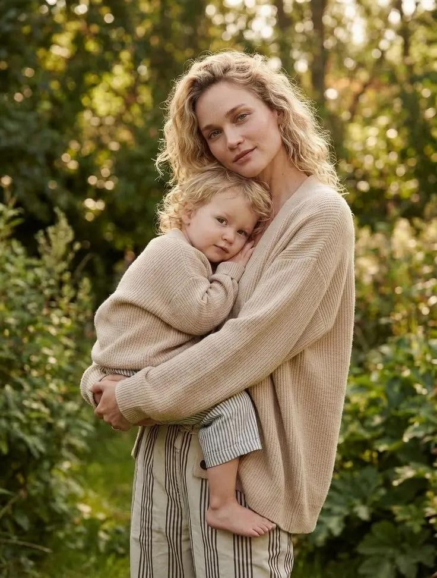
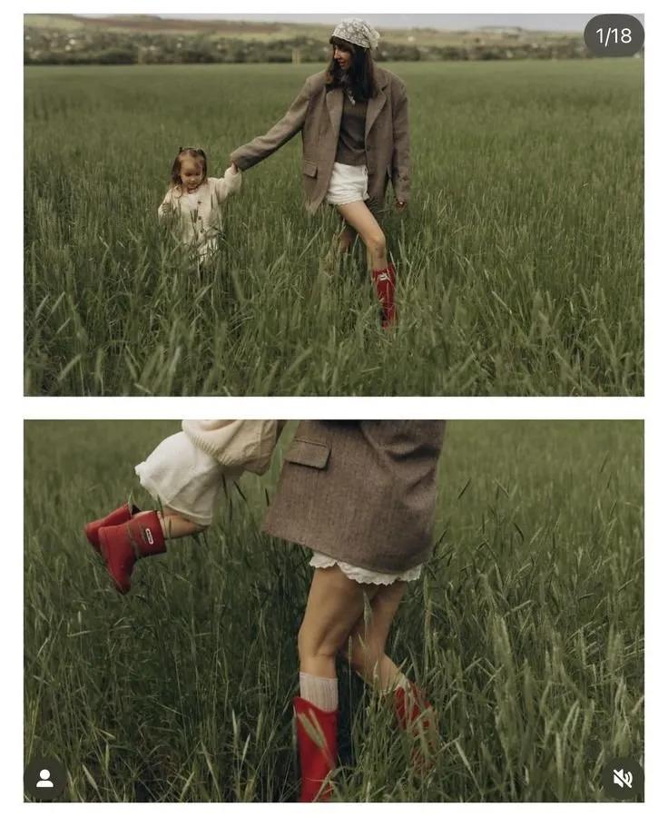
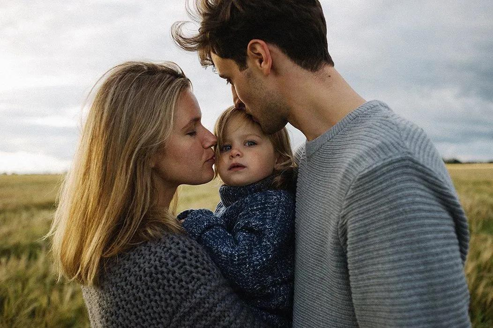
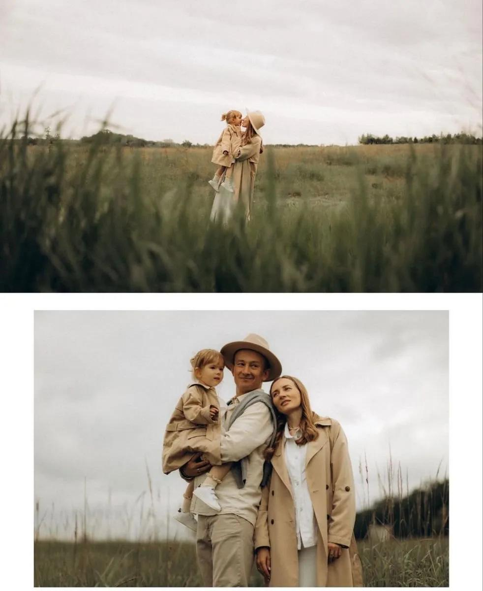
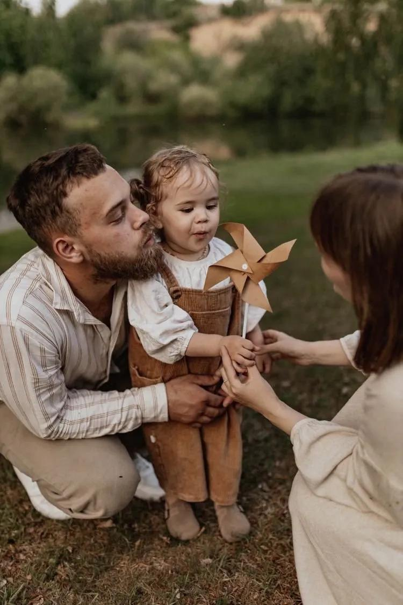
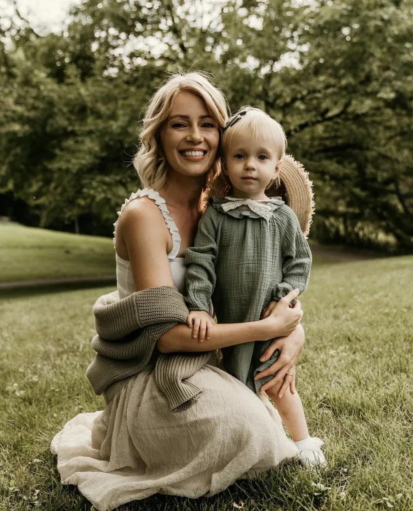
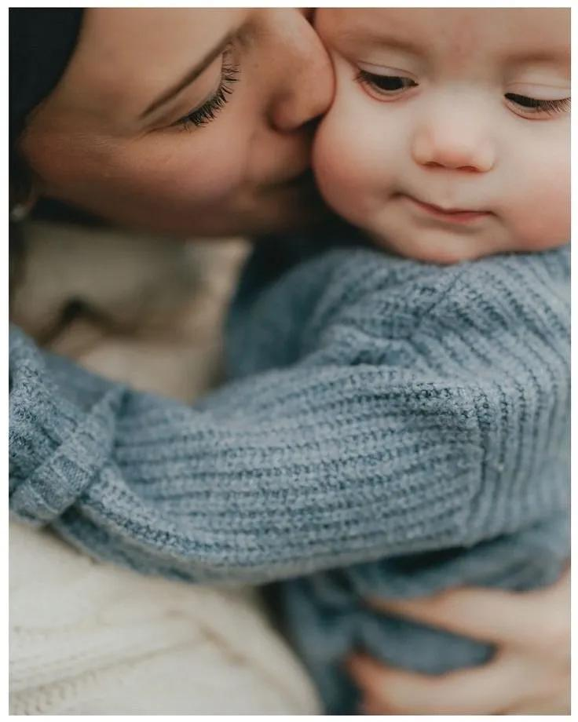
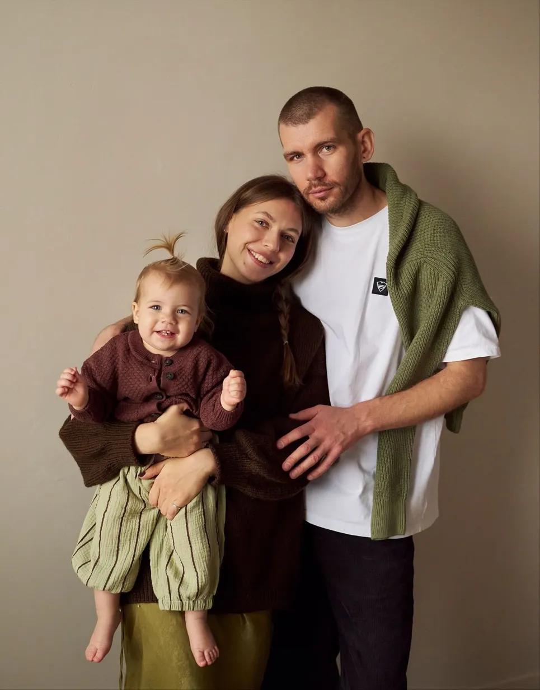
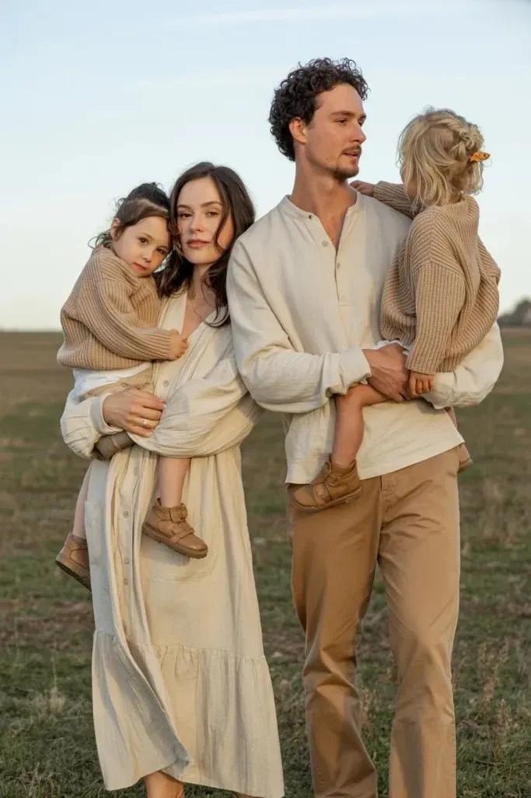

Семейная
фотосессия
на природе
Памятка для подготовки
Фотограф Алина

Памятка для подготовки
Фотограф Алина
это про
живые эмоции
и настоящие моменты
Меня зовут Алина, я ваш фотограф.
Я буду рядом с вами на съёмке —
помогу, подскажу и сделаю так,
чтобы вы чувствовали себя
легко и естественно.
@sklyar_raw_ph · @iisemem
80% результата

Сомневаетесь в выборе?
Смело отправляйте варианты —
я с радостью помогу собрать образы 🤍

Самые живые кадры


Обнимайтесь, смейтесь,
смотрите друг на друга,
гуляйте, играйте.
Ребёнку не нужно постоянно
смотреть в камеру — беготня,
смех и живые моменты
это и есть то, ради чего мы снимаем 🤍

Базовое:
плед в тон образам, любимая игрушка,
книжка, бумажные самолётики.
По желанию:
воздушные шары, мыльные пузыри,
цветы, сладкая вата или попкорн,
фрукты и яркие вкусности.

это не идеальные позы,
а смех, объятия, взгляды
и маленькие живые моменты

Вашего фотографа зовут Алина.
Пожалуйста, не опаздывайте —
если выходите впритык,
время съёмки сокращается,
а нам важно не спешить.
Заранее посмотрите локацию —
как добраться и где припарковаться.
Это поможет начать съёмку спокойно.
Вам не нужно быть идеальными —
вам нужно быть настоящими.
Я рядом, чтобы сохранить
именно вашу историю ✨
Контакты:
Instagram: @sklyar_raw_ph
Telegram: @iisemem
